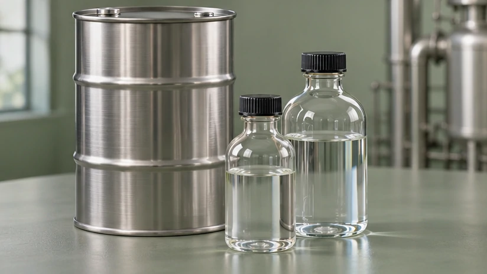
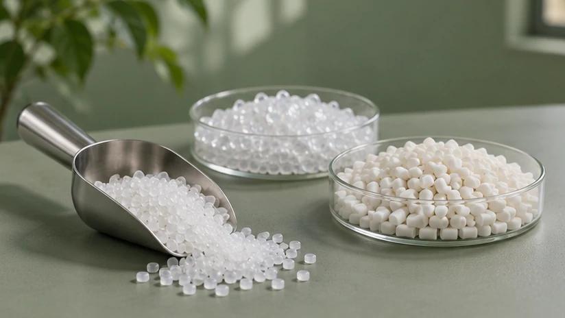

Фасовка
Как выбрать фасовку ацетата хрома
Один и тот же 50%-й раствор поставляется в канистре, бочке и еврокубе. Выбор зависит от массы заказа и от того, как участок принимает и расходует реагент.
Читать статьюВыбор сырья, спецификации и подготовка заявки на поставку.
Один и тот же 50%-й раствор поставляется в канистре, бочке и еврокубе. Выбор зависит от массы заказа и от того, как участок принимает и расходует реагент.
Читать статью
Динатриевая и тетранатриевая соли ЭДТА обе связывают ионы металлов. Для закупки важно указать нужную форму соли, потому что у позиций разные идентификаторы и требования к спецификации.
Читать статью
Состав, марка и документ, на который ссылается технолог, помогают отделу продаж подобрать точную позицию. Особенно важно это для смесевых растворителей.
Читать статьюВыбор тары влияет на приёмку, распределение партии между участками и число ёмкостей на складе. Начать можно с трёх вопросов к снабжению и складу.
Читать статью
В каталоге Везен есть ПВХ-смолы и готовые пластикаты. Чётко укажите требуемый вид материала и марку, чтобы заявка сразу попала к нужному специалисту.
Читать статью
В наименованиях лесохимического сырья легко перепутать сокращения. Например, в каталоге Везен и лиственное, и лёгкое таловое масло обозначаются как ЛТМ. Полное название помогает избежать ошибки при заказе.
Читать статью
Первое обращение должно дать технологу представление о продукте, партии и упаковке. Подробности технологии обсуждаются после предварительной оценки задачи.
Читать статью
Запрос «нужен реагент для воды» оставляет открытыми два вопроса: какая вода поступает на объект и какую задачу должен решить продукт. Эти детали помогают специалисту начать подбор.
Читать статью